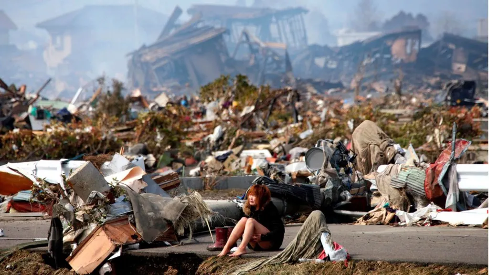

Fukushima Daiichi Nuclear Disaster
The Twin Forces of Nature: On the afternoon of March 11, 2011, the Tōhoku region of Japan was struck by a magnitude 9.0 earthquake—one of the most powerful in recorded history. At the Fukushima Daiichi Nuclear Power Plant, the reactors functioned as designed, immediately initiating an emergency shutdown (scram). However, the massive tremor triggered a catastrophic tsunami. Less than an hour later, a wall of water nearly 15 meters high breached the plant's seawall. The floodwaters swamped the facility, proving fatal to its infrastructure by submerging the backup diesel generators and the critical electrical switchgear located in the basements. This "total station blackout" meant the plant had no power to run the pumps necessary to circulate coolant through the reactor cores. In the desperate days that followed (March 12–15), the water inside the reactors boiled away, leaving the nuclear fuel rods exposed. As temperatures soared above 2,800°C, the fuel began to melt, slumping to the bottom of the containment vessels.

The extreme heat caused a chemical reaction between the steam and the fuel's zirconium cladding, producing massive amounts of hydrogen gas. This gas eventually ignited in a series of violent explosions that blew the roofs off three reactor buildings, releasing significant plumes of radioactive material into the atmosphere and the Pacific Ocean.
The Natech Reality: Fukushima is the primary example of a "Natech" event—a technological disaster triggered by a natural hazard. It demonstrated that even the most advanced safety systems could be defeated by a "beyond-design-basis" event. While the earthquake damage to the plant was manageable, the subsequent tsunami was a variable the plant's defenses were simply not built to withstand.
Key Facts
Date: March 11–15, 2011
Location: Ōkuma and Futaba, Fukushima Prefecture, Japan
Casualties: Massive release of radiation (INES Level 7); ~150,000 people displaced; severe long-term environmental and economic damage
Cause: A magnitude 9.0 earthquake followed by a massive tsunami that flooded the plant, disabling all emergency cooling systems and leading to three core meltdowns
The disaster forced the sudden, long-term evacuation of approximately 150,000 residents and created a massive, multi-decade decommissioning challenge that continues today. The Fukushima Daiichi disaster stands as the most severe nuclear accident since Chernobyl in 1986.
It served as a global wake-up call regarding "defense-in-depth" engineering, proving that critical infrastructure must be prepared for compounding, simultaneous disasters. The tragedy triggered a worldwide re-evaluation of nuclear safety standards, forcing plants to move backup power systems to higher ground and implement "hardened" vents. It permanently altered Japan's energy policy and reignited a global debate over the inherent risks of nuclear power in seismically active regions.